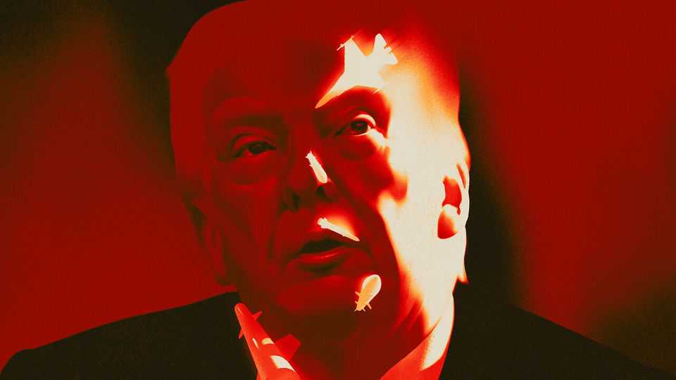
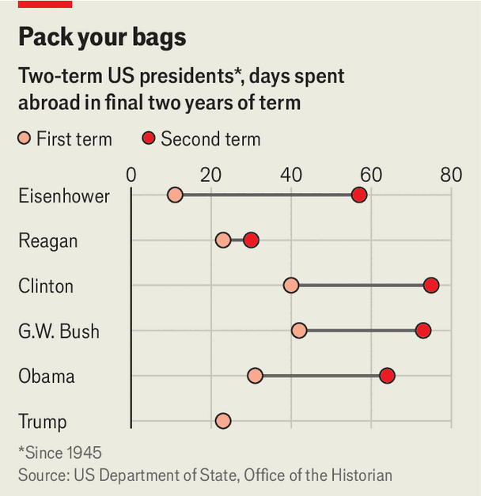
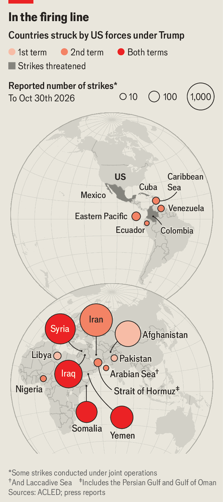
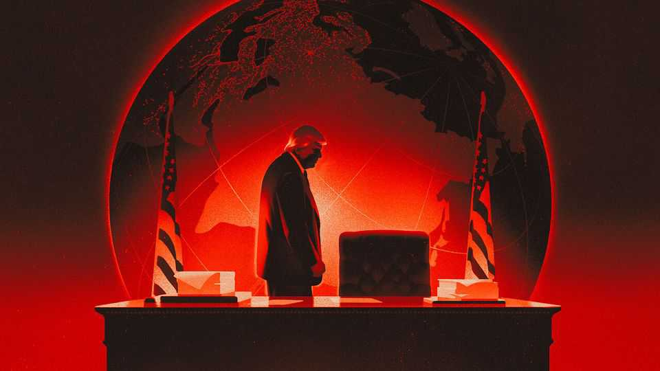

What will a lame-duck Donald Trump get up to overseas?
Embattled at home, the president will look abroad. That is worrying for the world, but it is not clear what he can achieve—for good or ill

Nov 5th 2026
DOUG SOSNIK, a former adviser to Bill Clinton, recalls the president’s frenetic agenda during his final stretch in the White House. “We talked about the schedule and how many more trips we could do—do you mind doing an 18-hour day?” Mr Clinton was a man in a hurry. “I’ve only got a year left in office,” he observed. “I’ve got the rest of my life to sleep.”
The same clock now ticks for Donald Trump. He has been the defining protagonist of the past decade in American politics. But on November 3rd he became only the second term-limited president, after George W. Bush in 2006, to fight his final midterm election in control of both chambers of Congress and to lose both, shocking Mr Trump himself. “Wow,” he told the New York Times upon learning of his party’s loss in South Carolina, a former MAGA stronghold. “That’s amazing.”
In his final two years in office, Mr Trump will be embattled at home as he confronts his political mortality. Congress, which Mr Trump had rendered largely irrelevant while under Republican control, will swamp his administration with hearings and subpoenas on corruption and abuse of power. (“Lawyer up,” one congressman advised on X.) It will dare him to veto popular policies such as restoring health-care funding. Democrats will try to stop his vanity pursuits in the capital, too: his grand ballroom and his triumphal arch. But the area where he will continue to have the greatest, most unrestrained impact is overseas, where he will turn for monsters to slay and legacies to leave.
Mr Trump’s foreign policy—from Venezuela to Greenland to Iran—has been radical and hyperactive. Now it could become more so. Mr Trump has unfinished business in Iran and Cuba that could drag America deeper into the Middle East and Latin America. His flirtation with great-power carve-ups, including summitry with Vladimir Putin and Xi Jinping, could herald a darker world order—and difficulties for Ukraine. His quixotic courtship of Kim Jong Un, North Korea’s leader, could upturn American nuclear policy. All this will unfold as AI wizardry spirals towards artificial general intelligence, throwing up diplomatic and national-security challenges that will fall to Mr Trump to manage.
All this would be concerning enough for the world under a president who had a gift for diplomacy, a Herculean work ethic and a normal attention span. Mr Trump not only will have to do without those qualities, but he will also probably lose experienced staff who could help in a crisis—another feature of lame-duck periods. The president’s adventures abroad over the next two years promise to be chaotic and unpredictable, if not necessarily fruitful.

Mr Trump will not be unique in searching for solace abroad as the end comes into sight. The Economist has analysed presidential travel records going back to Harry Truman. They show that presidents are typically much more active overseas in the last two years of their second terms (see chart). Mr Bush spent 50 days abroad in 2008, twice his previous annual average. After losing the 2006 midterms, he ordered a surge of military forces in Iraq against bitter opposition in Congress in the hope of salvaging a war that had gone badly awry. Barack Obama doubled his travel between the final two years of his first and second terms. His sweeping nuclear deal with Iran came the year after his own bruising in the 2014 midterms. “Presidents by the end of their term are frustrated with the various constraints on them,” says Yuval Levin of the American Enterprise Institute, a think-tank, who served in the Bush administration. “And foreign policy is where there are fewest constraints.”
Mr Trump, like an impresario who changes the act when the audience grows weary, is drawn to foreign-policy manoeuvres that confound his critics and, in his mind, demonstrate his strength. Mr Trump has long boasted of his diplomatic prowess, famously claiming that he would end the Ukraine war in a day—and, at a midterms rally on November 1st, that he would have won the Vietnam war in a week. Mr Trump’s evident failure to win the war at hand, with Iran, therefore rankles with him. The two sides continue to skirmish, with America conducting what it described as “defensive” air strikes on November 2nd.

Until recently Mr Trump was leaning towards his third attack on Iran in 18 months (see map), in concert with Israel, to force it to fully reopen the Strait of Hormuz and limit its nuclear programme. That would trigger Iranian retaliation against Gulf energy facilities, consuming Mr Trump’s attention for months to come. On October 28th Chris Murphy, a Democratic senator, said that he had received an intelligence briefing on America’s war plans. “I will just say this—their plan is insane,” said Mr Murphy, noting that public reporting had pointed to the targeting of civilian infrastructure. “It will lead to devastating escalation and the likely destruction of our commitment to the rule of law.” (Three days later Mr Murphy went to hospital after suffering a stroke.) A person familiar with the planning says that Mr Trump was considering whether to strike Iranian oil tankers in Asia.
In recent days other sources say that Mr Trump has put these plans on ice, telling Binyamin Netanyahu, Israel’s prime minister, that America will not back an Israeli attack. Israeli forces, which were ready for a strike, have paused their preparations.
Mr Trump will face opposition to fresh strikes from multiple sources. One is J.D. Vance, his vice-president—and a probable candidate for president in 2028—who, in a post on X on November 4th, explicitly blamed the midterms drubbing on the war and said voters wanted a different relationship with Israel. Another is Congress. Such is the scale of the blue wave and so detested is the war—on a par with the Vietnam war—that Democrats might withhold funding (and risk being accused of undermining the troops in the field). Even if Mr Trump chooses to escalate, America is unlikely to have the munitions, air-defence interceptors or political stomach for another protracted campaign. Mr Trump’s aim is presumably to secure a deal that allows him to emerge from the fracas with the appearance of an honourable peace. Iran’s leadership, conscious of Mr Trump’s political frailty, is unlikely to fold easily.
If Iran is the first test of Mr Trump’s diplomatic agenda, Ukraine is likely to be the second. Here the president’s vengeful instincts present dangers. Mr Trump has repeatedly blamed Ukraine for the war, criticised the country’s strikes on Russian oil refineries and belittled Volodymyr Zelensky, its president. So far American intelligence-sharing with Ukraine and arms sales via Europe have survived. When American negotiators unveiled a half-baked 28-point peace plan, in November 2025, Mr Trump’s secretary of state, Marco Rubio, and European allies intervened to prune its worst parts. At each juncture, Mr Trump has stepped back from the breach of a complete abandonment of Ukraine and a definitive turn towards Russia.
Mr Trump may direct his ire once again at Mr Zelensky, should he conclude—wrongly—that Ukraine’s strikes on Russian refineries were primarily responsible for the fuel-price shock that helped doom Republicans at the polls. In 2020 Mr Trump responded furiously after believing that China had misled him over the spread of covid-19. A similar sense of betrayal could translate into a more aggressive pressure campaign against Mr Zelensky personally and Ukraine as a whole, with the aim of forcing Ukraine’s capitulation.
An early glimpse of Mr Trump’s post-midterms mood may come on November 18th-19th, when he and Mr Putin visit Shenzhen, China, for an international summit hosted by Mr Xi. America’s European allies fret that Ukraine will be on the menu. In recent months, Mr Trump has made concession after concession to Russia, cutting a deal to buy diesel and waiving sanctions in return for the release of an American prisoner, in part to lure Mr Putin to the negotiating table. Mr Putin may conclude that he will never again enjoy as pliant a partner as Mr Trump. But the Russian leader also believes that time is on his side, and that European support for Ukraine will ebb away. What is more, Democrats in Congress can be expected to hinder or block efforts by Mr Trump to give Mr Putin more ground on Ukraine—especially any deal that reeks of corruption.
The president may quickly lose interest (not for the first time) in the quagmire of Ukraine and turn his attention to another developing hot spot in his own hemisphere: Cuba. Since taking office, Mr Trump has squeezed Cuba’s dictatorship economically, causing power cuts, food shortages and a collapse of health care on the island. In January 2026 the president decapitated Venezuela’s government by abducting Nicolás Maduro, its leader. He is thought to be tempted by a similar model of light-touch regime change in Cuba.
America’s economic warfare is intended both to weaken the regime and split the country’s elite, potentially throwing up partners who might work with America, much as Delcy Rodríguez, Venezuela’s acting leader, abandoned Mr Maduro. Mr Trump has made little secret of his goal. “We’ll take care of Cuba on our way back from Iran,” he boasted on the campaign trail in October. That month Mr Rubio, a Cuban-American hawk, urged disaffected Cubans to work with the CIA: “To those who seek to create positive change in Cuba—now is the time.”
Mr Trump longs to be a president who achieves what his predecessors did not. He would relish being the leader who reversed the Cuban communist victory of 1959. But he is not a man for details. In Venezuela he has largely left the country’s dictatorship in place, swapping its leaders and cutting grubby deals to secure its oil for American firms. A fudge like that would be far harder to pull off in Cuba, notes a person with knowledge of the administration’s debates, because Cuba’s diaspora—which is older and more established than Venezuela’s—would make its wrath felt.
It would arguably help Mr Trump’s chances of success in his foreign-policy endeavours if he had experienced staffers around him. But an exodus may be under way. Mr Rubio, who also serves as national security adviser, has quietly been exploring jobs in the private sector. (He may skip the 2028 presidential race, hoping for more favourable conditions in 2032.) Mr Rubio’s departure would shift the balance of the administration, potentially leaving John Ratcliffe, the director of the CIA, as the most influential hawk in the cabinet.
The president may also lose his favourite man at the Pentagon. Many Democrats want to impeach Pete Hegseth, the pugnacious and divisive secretary of war. Hakeem Jeffries, the likely Democratic Speaker of the House, has not ruled it out.
Democrats may demand Mr Hegseth’s ousting as the price of passing an $87.6bn supplemental bill including $67bn for the Department of War, which is in a deep financial hole. Presidents often seek scapegoats after an electoral pummelling. Mr Bush dumped Donald Rumsfeld, his defence secretary, after his midterm loss in 2006; Mr Trump sacked Jeff Sessions, his then attorney-general, after his party’s defeat in the House in 2018.
Yet Mr Trump is more likely to respond with defiance than with contrition. There is speculation that Mr Hegseth could be shunted into the job of national security adviser or possibly appointed to the Senate seat for Tennessee that is to be vacated in January by Marsha Blackburn, who has been elected the state’s governor. There, some note, he would enjoy a degree of protection from Democratic probes—including those into his deadly strikes on boats thought to be carrying drugs.

Even if Mr Hegseth survives, Mr Trump’s coterie of advisers has already begun to thin out. The national security council has been largely gutted, resulting in ad hoc and haphazard decision-making. Experts have been fired en masse, resulting in poor preparation for meetings and negotiations. Policy can swing on the whim of individuals or small groups, as Elon Musk, the founder of SpaceX and a former adviser to Mr Trump, showed when his firm appeared to cut off vital satellite communications to Ukraine during a row in October. Some of Mr Trump’s envoys, both official and unofficial, blend diplomacy with the pursuit of lucrative business deals.
Mr Trump will also find it ever harder to gain the Senate’s assent for new cabinet secretaries and other appointees, leaving officials in acting roles for long stretches. Susie Wiles, the president’s chief of staff, who is widely viewed as a stabilising force in the White House, may depart after serving for longer than any of Mr Trump’s first-term consiglieri. The ultra-nationalist agenda pushed by Stephen Miller, Ms Wiles’s deputy, has proved to be an electoral liability. The quality of staff tends to fall during an administration, observes Mr Sosnik: “You see a thinning of the herd, with the people coming in…generally a peg or two below the people that they replace.”
That leaves an increasingly isolated, embattled Mr Trump looking for ways to shore up his legacy in the only way he knows: entirely ad hoc. It is not unusual for lame-duck presidents to roam the globe in search of lasting achievements in their final days. But history shows it is hard going.
Woodrow Wilson spent six months at the Paris Peace Conference in 1919 and returned to sell the League of Nations to the American public—an effort that failed spectacularly when the Senate spurned the treaty. Dwight Eisenhower’s superpower summit with the Soviet Union fell apart after a U2 spy plane was shot down. In 1968, after he decided not to seek re-election, Lyndon Johnson tried to secure a settlement of the Vietnam war, to no avail. In his last year in office Mr Clinton came close to visiting Pyongyang and tried, but failed, to forge a lasting peace deal between Israel and the Palestine Liberation Organisation.
Some have fared better. Richard Nixon and Ronald Reagan signed major arms-control agreements in their final years (as did Johnson). Mr Obama normalised ties with Cuba and painstakingly negotiated the Iran nuclear deal (scuttled by Mr Trump). And Mr Trump himself, in the last part of his first term, went on a foreign-policy blitz, meeting Mr Kim three times, signing a peace deal with the Taliban and brokering the Abraham accords which normalised relations between Israel and several Gulf Arab and north African states.
A lame-duck Mr Trump does not seem well-positioned to strike lasting, historic deals. But he will try. He wants to meet Mr Kim yet again to pick up where he left off in his first term. He is keen on a three-way meeting with Mr Putin and Mr Xi at the summit in Shenzhen. That is ostensibly also to discuss nuclear arms control (a topic China has no interest in broaching while its arsenal is below parity with America and Russia). Eventually he may again try to broker a peace in Ukraine.
The prospects for substantive diplomacy seem bleak. The risk is that Mr Trump agrees to shoddy deals that serve as sticking plasters, allowing him to claim he is worthy of a peace prize. (Mr Vance too may encourage such pacts to promote his own peacemaking bona fides to future voters.) That could store up serious problems for Mr Trump’s successor, just as happened in 2020: Mr Trump’s pact with the Taliban contributed to the collapse of the Afghan government and Joe Biden’s chaotic withdrawal the following year.
Mr Trump’s lame-duck status will also make it harder for him to strike lasting deals in the first place. Friends and foes will adjust how they interact with the president, notes Sam Charap of the RAND Corporation, a think-tank, mindful that his political authority will ebb away. The extent of Democratic gains on November 3rd suggests that the party is in a strong position to win the presidency in 2028. Many late-term deals, such as Mr Obama’s nuclear agreement with Iran and opening to Cuba, rest on weak legislative footing and are easily undone by successors. Ukraine, in particular, might try to wait out Mr Trump in the hope of a successor, in 2029, who would look more favourably on the country. Indeed, it will now be hard for Republicans to recapture the Senate—which must approve international treaties—until 2032, beyond Mr Trump’s tenure.
It is possible that Mr Trump’s fundamental unseriousness will work in the world’s favour. It takes work to achieve diplomatic breakthroughs. Mr Trump’s lack of follow-through might end up leaving a status quo world to the next president. Perhaps he will be drawn more to his domestic preoccupations: carving his name into Washington’s granite, securing his family’s post-presidency business interests and doling out pardons. But it is also possible that his impetuous nature will put the world at risk in a crisis, a black swan that tests a president’s wisdom and patience. Consider an AI-enabled cyber crisis or a Chinese blockade of Taiwan, or something worse. For two years, the world will be holding its breath.■